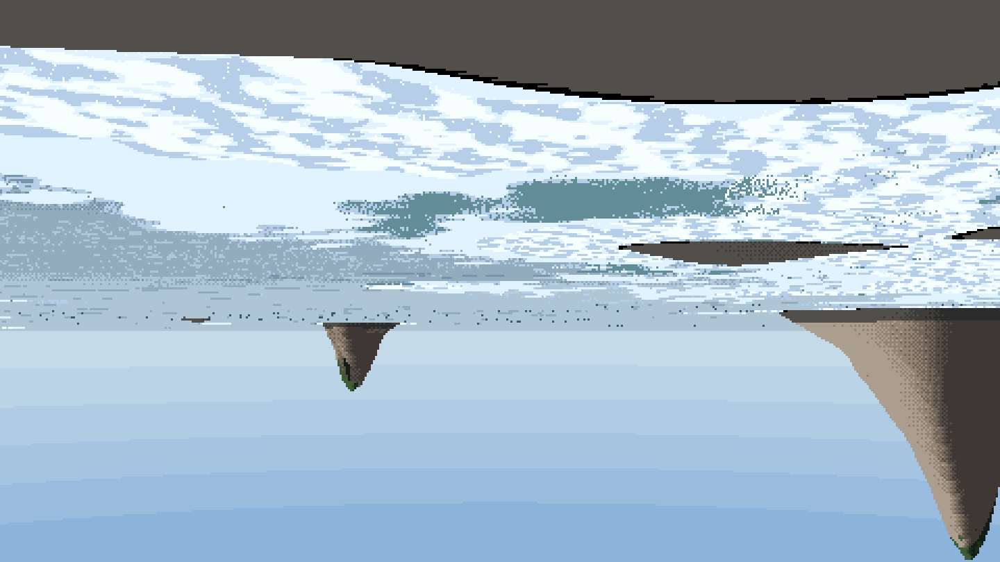
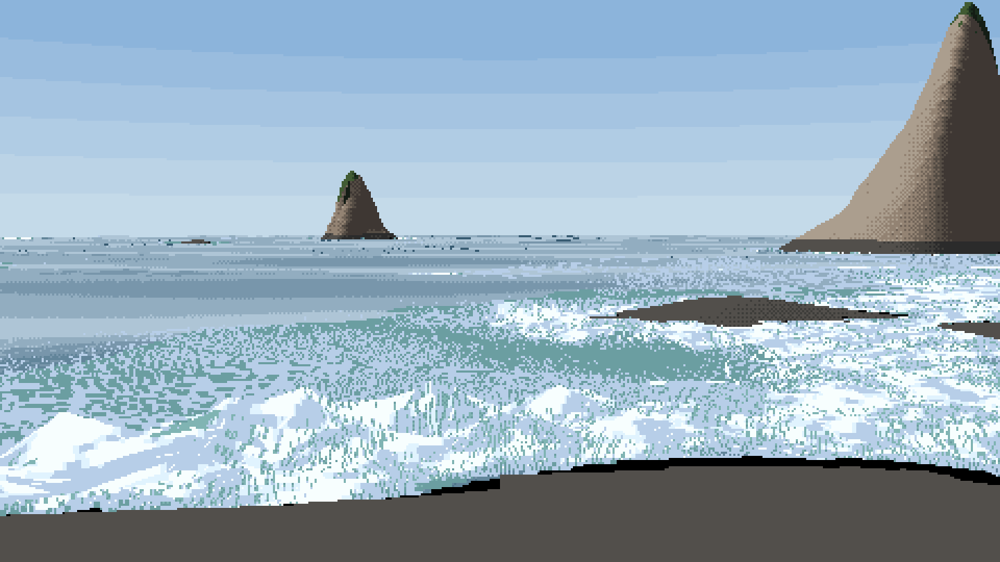
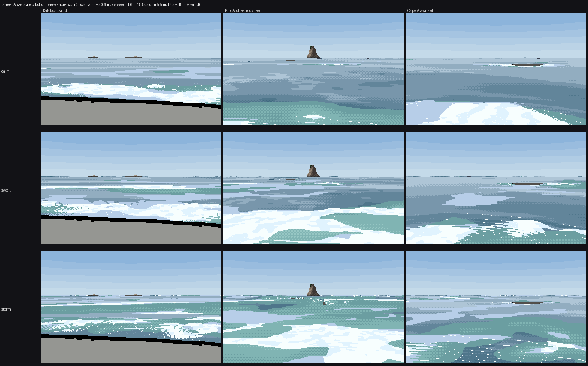

6. Eye level: the water as a heightfield *(partly solved)*
What it's for. It draws the view from the beach, 1.7 m above the waterline, from the same fields and painter as the aerial views. It's the weakest of my three views, and I'm teaching it because two of its steps are right and reusable, and because the way it fails is instructive.
Code: PerspCam, persp_gbuffer in code/sea/render.py; eta_field in code/sea/scene.py; the 'graze' in G branch of paint_sea; code/shore.py.
Step 0. The camera, and a left-handed grid
The grid's y axis points south (image rows), so it's left-handed, and the textbook up = right × forward came out pointing down. My first eye-level frame was upside down: sea above, sky below, stacks hanging like icicles.

s1_poa_shore.png, first render.
up = -np.cross(right, fwd) # grid coords are left-handed (y south)
Step 1. What's wrong with a flat sea: a snowfield
With the sea as a plane at z = tide, every screen row maps to one distance. The near rows are the surf zone, whose foam coverage is high, so the lower half of the frame filled with foam seen from above, stretched toward the eye. There were no waves, because nothing stood up:

v3. The first critic: "reads as a snow field, with no breaking-wave lines and no shrinking with distance."
Step 2. The water is a heightfield
At eye level you mostly see wave faces, and each face hides the water behind it. The sea surface needs a height. The sim's crest phase and per-crest height already give one: a Stokes-sharpened profile (peaked crests, long flat troughs), flattened where the crest has broken, since bores are lower and flat-topped:
def eta_field(S):
T = S['T']; q = np.mod((S['t_now'] - S['tt']) / T, 1.0)
a = 0.5 * S['Hinst']
ph = 2 * np.pi * q
prof = np.cos(ph) + 0.35 * (np.cos(2 * ph) - 0.3) # peaked crests, long flat troughs
brk = S['brkf'] > 0.5
prof = np.where(brk, np.clip(prof, -1, 0.6), prof)
return (a * prof * np.clip(S['depth'] / 0.8, 0, 1)).astype(np.float32)
The ray march treats sea and land as one heightfield, max(z, tide + eta), and records which one it hit. Then each water pixel's Fresnel uses the normal of the facet it hit, not the flat plane's:
gye, gxe = np.gradient(eta)
ex = -bilinear(gxe, G['x'], G['y']); ey = -bilinear(gye, G['x'], G['y']); en = np.sqrt(ex * ex + ey * ey + 1)
cosi = -(dx * ex + dy * ey + dz) / en # cos of incidence on the tilted facet
G['graze'] = np.where(sea, np.degrees(np.arcsin(np.clip(cosi, 1e-4, 1))), G['graze'])
Faces turned toward the eye look down into the water, so they show body and dark, high sky. Backs turned away graze and mirror the bright horizon. That's Ruskin's "grand division of the whole space of the sea by a few dark continuous furrows", and it falls out of Schlick's Fresnel on tilted facets. The water ramp at eye level is mirror, the deep body blended toward the sky by the Fresnel fraction.

v5, the first heightfield frame. Waves at last have faces and stand up. But the near faces are cut into vertical stripes: a fixed-step march overshoots each crest by up to a step, so neighbouring columns land on different sides of it.
Step 3. Bisect every hit
After the march, each hit is refined by seven rounds of bisection between the last step above the surface and the first below:
for _ in range(7):
mid = 0.5 * (lo + hi)
x = cam.x + dx * mid; y = cam.y + dy * mid; zr = cam.z + dz * mid
above = bilinear(zw, x, y) > zr
hi = np.where(fin & above, mid, hi); lo = np.where(fin & ~above, mid, lo)
v6. The stripes are gone and the crest silhouettes are clean. Swell lines recede in perspective.
Step 4. Texture size along the view
A pixel at eye level covers much more ground along the view than across it (by 1/sin of the grazing angle). If textures are sized only by the horizontal footprint, the far water fills with rows of 1 px dashes. So the painter's mpp is a per-pixel array stretched by grazing, and cq (how-to 4) sizes every mark against it:
G['mpp_h'] = np.nan_to_num(tt, nan=1e3) / f
G['mpp'] = G['mpp_h'] / np.maximum(np.sin(np.radians(G['graze_geo'])), 0.02) ** 0.7
(The exponent 0.7 is my guess; I didn't sweep it.) This uses the geometric grazing angle. When I added the tilted facets, the first version of this line picked up the facet's angle, which would have made texture size change with every wave, so I split graze_geo out before rendering.
Where it is

Sheet A, eye level: calm, swell and storm at the three places, standing at the waterline. The second critic: "The eye-level column fails in every row: dither stripes and stray hatching, and the sun version's surf is a blown-out white smear."
I agree, and I know two of the reasons:
- The near surf is foam seen from above, projected. The foam marks were designed for an aerial view. At eye level a broken wave is a vertical wall of white with a shadowed face below its lip, and a bore is a low white ridge. Neither is a coverage map lying on the surface. Eye-level foam needs its own marks: the lip, the curl, the bore front as a line with height.
- The beach and the swash aren't built. The sand is flat grey (other students own sand), and the glassy wet-sand mirror with its scalloped lace fronts is the thing the eye reads first at a beach. The water study drew swash; the next step is to port it.
What I'd keep: the heightfield with per-facet Fresnel, bisected hits, and the grazing-stretched LOD. Those three are right, and a lane building a shore camera can take them as they are.